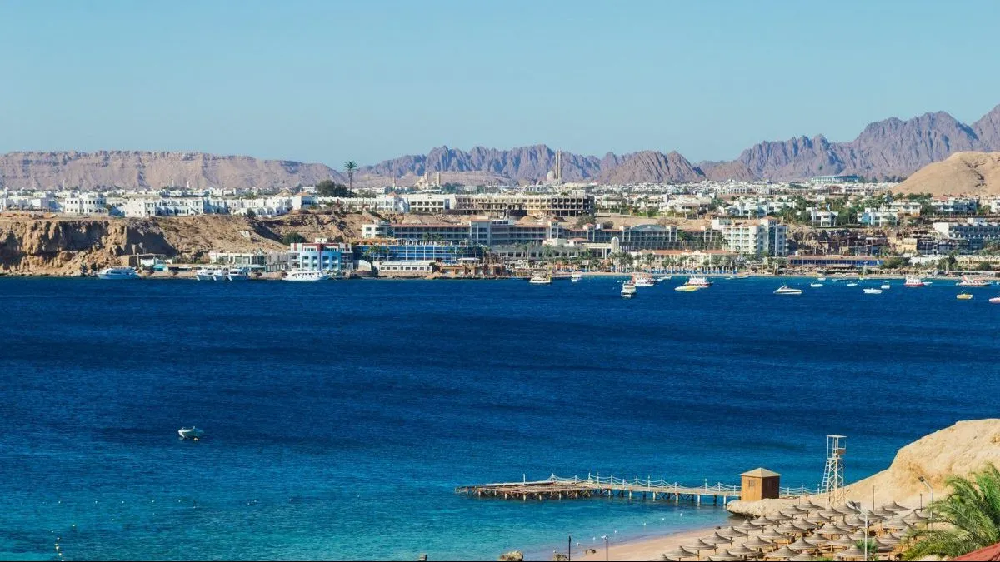

Sharm el sheikh city
Sharm El-Shaikh Sharm El-Sheikh is considered one of the best tourist cities in Egypt, as it overlooks the Red Sea and mediates between the Gulfs of Suez and Aqaba. The city of Sharm is distinguished by its natural landscapes, and there is a clear diversity between leisure and adventure tourism, safari, mountaineering, diving, and resorts. Sharm El-Sheikh has been classified as one of the most beautiful cities in the world and has been called the City of Peace The most important landmarks of Sharm El-Sheikh Ras Mohammed Reserve This reserve is located in South Sinai and is considered the first natural reserve established in 1938 AD The reserve is characterized by soft white sands, clear blue waters, and the presence of more than a thousand species of fish, sea turtles, and coral reefs. The reserve includes many areas and beaches such as the Suez Beach, the Enchanted Lagoon, the Anemones area, the sea snake garden, the Yolanda coral reefs, and the mangrove channel. King Tutankhamun This museum is located inside the Genena City shopping center in the Naama Bay area. The museum contains many professional manuscripts and drawings. The museum presents a dramatic panorama that embodies the life of King Tutankhamun and his most important achievements during his reign, along with artifacts and treasures that were discovered in 1922 AD. The museum also has many newly carved pharaonic statues in an attractive way. Naima Bay One of the most famous tourist places in Sharm El-Sheikh,
as it is located at the confluence of the Gulfs of Aqaba and Suez. Its beaches are characterized by clear waters, fine sand, and the presence of many colorful fish and coral reefs, which encourages tourists to practice diving, skiing, and renting sailboats. The Gulf also provides relaxing pleasure for sunbathing during the day, and shopping in the souks and buying international brands and antiques at night. The most important beaches of Sharm El Sheikh
Dahab beach Dahab Beach offers great opportunities for swimming, surfing and water bikes, with integrated service facilities and restaurants to serve the best local cuisine. Umm El Sid Beach It is one of the most beautiful beaches in the south. It includes many fish and coral reefs that are easy to see with the naked eye without the need for diving due to its proximity to the surface and the purity of the beach water. This beach is suitable for children, as the water is more than 100m shallow. The beach enjoys calmness and the views of the lighthouse on the water lights, which gives the beach an attractive shape. The most important restaurants in Sharm El Sheikh Mojo Restaurant It is located in Naama Bay, directly in front of the Lido Hotel .. and it is located in front of the sea. You can sit inside it .. or sit on the balcony overlooking the sea .. This restaurant serves sea salad with lemon .. Spanish chocolate .. and many exotic dishes from different countries, especially from Europe and the Middle East. Working hours 12 am - 12 noon Fayrouz Restaurant Fayrouz Restaurant is one of the best restaurants in Sharm El-Sheikh,which serves many light Egyptian and Lebanese foods that are distinguished by their delicious taste, and the kibbeh dish is one of the most popular dishes in the place. Date of work 11am - 1pm Beijing Restaurant Peking Restaurant, which specializes in Chinese cuisine, is located in Naama Bay, near McDonald's. The most important hotels in Sharm El-Sheikh
Musaed Hotel Sharm El Sheikh Starting from 398 EGP per night Coral Sea Aqua Club Resort It starts from 2450 pounds per night Palma de Sharm Resort It starts from 1092 EGP per night Badawiya Sharm Resort It starts from 407 pounds per night El Khan Sharm Hotel It starts from 469 EGP per night Old Face Sharm Resort It starts from 1378 EGP per night The most important market in Sharm El Sheikh · the old market It is gaining great popularity and is considered one of the most important tourist attractions, as there are commercial markets and bazaars selling gifts, antiques, women's bags, and others. The old market is characterized by many shops, which gives you many opportunities to choose, and it is also characterized by a low price. There are also two hotels overlooking the market gates. There are also many oriental restaurants, seafood and fast food, and there are many cafes and coffee shops that offer all kinds of drinks, and there is also a theater that shows many different entertainment programs. popular market One of the most prominent markets in Sharm El-Sheikh is the popular market in it, and it was known by this name because of the impressions it gives visitors about the authenticity of the place, and its belonging to the ancient Egyptian culture and civilization.